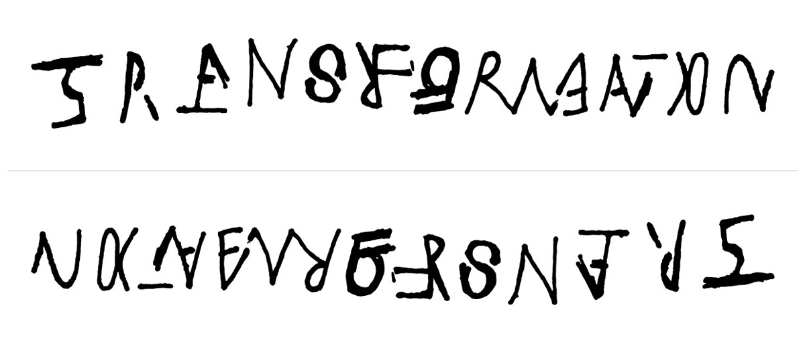

Designing the identity for this year’s UK NewFront was quite the challenge! During the briefing call, we were discussing the meaning of transformation and how it would apply to all of the presentations at the event. It occurred to me that not only would the talks be about transformation, but the UK NewFront itself would be transformational for its attendees - who would leave with new perspectives to apply to their own dealings with clients, customers, and businesses. So an interesting challenge would be to show the UK New Front logo itself as inherently about transformation.
During that initial call, I began to sketch what would become the heart of this identity:
An ambigram is a word that can be read in multiple directions, with the word either reading the same when right-side up and upside down, or - as is the case with this logo - as an entirely new word. Working with ambigrams is a tricky business, as it is difficult to create a word that is equally legible from both sides. As you can see from the early sketch pictured above, TRANSFORMATION is legible but UK NEW FRONT ‘15 can barely be discerned at all.
This was not the first time I had played with the idea of an ambigram. Years ago I drew the word ‘harmony’ in a way that was harmonious because it read the same way from both top and bottom. The challenge there was a bit less difficult: HARMONY simply had to read THE SAME from both sides--not as two completely different words!
The process of creating this new logo was both collaborative and transformative itself. Once I had refined my sketch, I handed off the project to several designers with fresh eyes, and worked with them further to make it legible.
Camilo Medina - with whom I had recently collaborated on the New York Stock Exchange identity and a deck of playing cards for the band Spoon - began to delve more deeply into the lettering. After the first day, Camilo’s file was looking like this:
Day two ended with an image that we felt confident to share with the UK New Front team. It was at this point that we would learn if we were onto something.
It was a resounding success! We continued to move forward, finalizing the letters with colour and texture. At this point, Shelby Rodeffer - a recent Cannes Young Lion - took over the file, further tweaking and transforming the letterforms to read from both sides.
Lastly, Andy Gregg took hold, molded and transformed the letters and colors to their final (yet transformative) resting place.
Throughout the entire process, we asked everybody we came into contact with: “Can you tell me what this says?” Only after a dozen people in a row were able to read both TRANSFORMATION and UK NEW FRONT ’15 with ease could we be sure that we had accomplished what we set out to do.
We had a lot of fun with this, and in the end have what we truly believe is a first-of-its-kind transformative conference logo: an ambigram that communicates the theme of TRANSFORMATION and then applies that theme itself to reveal the name of the conference, UK NEW FRONT ’15.